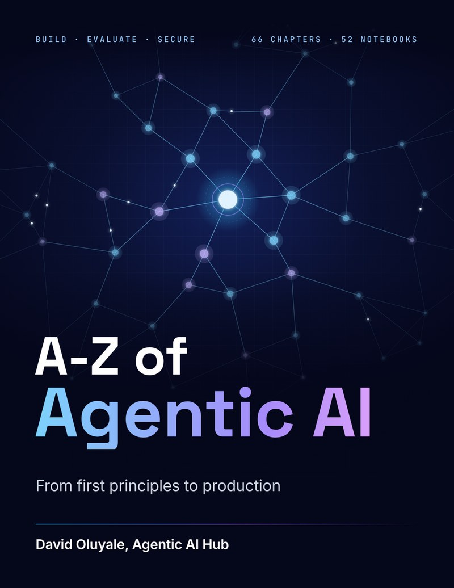

Medium · Lessons from Building AgentDocker.io
David Oluyale · davolu
I architect, design and ship advanced production multi-agent systems, from orchestration and evaluation to security and cost.
I’m an Agentic AI and LLM engineer with 12+ years of software engineering experience across web, mobile, AI/ML and IoT. I architect solutions rather than just ship features — from multi-agent platforms to small, calibrated models that take repeated decisions off expensive LLM calls.
-
Experience
12+ years in software
Web, mobile, AI/ML and IoT
-
Google for Startups
AI contractor for a company in the Google for Startups Accelerator: AI
-
United Nations
Data science consultant for startups and organisations including the United Nations
-
Upwork
5.0 stars · 17 reviews · ~3,200 hours
-
Education
Systems Engineering, Middlesex University London
-
Author
Author of A-Z of Agentic AI (865 pages)
Agentic AI Hub on YouTube

Book · 865 pages
A-Z of Agentic AI
From first principles to production
An 865-page, hands-on guide to building, evaluating and securing AI agents, by David Oluyale (Agentic AI Hub).
- 66 chapters across 12 modules, plus a 6-part capstone studio
- 52 runnable Google Colab notebooks linked from the chapters
- Available as PDF and EPUB
Selected work
Agents, decision models, and the systems around them.
-
01
AgentDocker
An autonomous AI agent platform: multi-model (Claude, GPT, Gemini, Grok, Mistral), tool use, MCP connections, scheduled agent runs and a cloud desktop.
Multi-modelMCP · cloud desktop
-
02
Emotion-S1
A ModernBERT emotion decision model. On held-out data from its own domain it beats Claude, GPT and Jev, at about 41 ms per call on CPU and $0 per call. On unseen data it trails on fine-grained labels.
~41 msCPU · $0 per call · own domain
-
03
agentic-architect-skill
A Claude Code skill that turns a brief into an agent architecture diagram in Miro.
Brief → MiroClaude Code skill
-
04
NobleAgent
A TypeScript framework for customer-safe chat agents: cited RAG, durable memory, cost budgets and human-in-the-loop.
Customer-safeCited RAG · budgets · HITL
-
05
GrantScout
An autonomous research agent that finds nonprofit grants every day, scores how well each one fits, and emails a ranked digest with deadlines and apply links.
Daily digestRanked grants · deadlines
-
06
ColdOpen Trailer Agent
An AI agent that watches a long YouTube video or podcast, finds the most gripping moments, and cuts a captioned cold-open trailer and vertical Shorts.
Trailers & ShortsFrom long-form video
-
07
Agentic-Architecture-Orchestration
Agentic loops, coordinator/sub-agent (hub-and-spoke) patterns, session state, task decomposition and workflow enforcement.
Hub-and-spokePatterns & orchestration
-
08
Mini-Jev
A System One decision model tutorial.
TutorialSystem One decision model
Expertise
Where the work sits.
-
Agentic AI
Multi-agent orchestration, tool use, memory, scheduling and MCP integrations.
-
LLM engineering
RAG, evals, fine-tuning, and cost and latency control in production.
-
System One decision models
Small, calibrated models that run on CPU and take repeated decisions off expensive LLM calls.
-
Full stack
React, Next.js, React Native, Python, Node, TypeScript and AWS, from UI to CI/CD.
-
IoT hardware
End-to-end product work: schematics, PCB layout and physical assembly.
Writing & teaching
Start here.
Medium · Lessons from Building AgentDocker.io
Self-Correction and Failure Recovery in Agentic Loops
YouTube · Agentic AI Hub
Agentic AI Hub
Teaches you to build AI agents from scratch: systems that use tools, remember, plan and get real work done, not just chat.
More essays, including Emotion-S1 and the System One tutorial, on Medium.
How I can help
Build with me, or hire me to lead the work.
I’m open to Senior and Lead Engineering roles, AI/ML opportunities, CTO conversations, and high-impact agentic AI consulting. If you’re building agents, or want a decision model trained on your own domain, let’s talk.